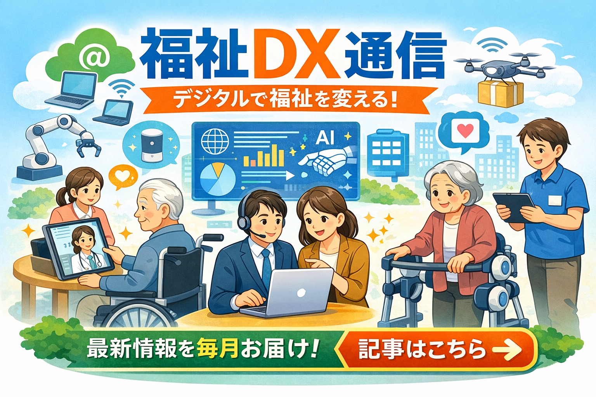

事業内容

DX推進支援・業務改善コンサルティング
介護・医療現場の課題に合わせ、ICTツールの選定から導入、運用定着までを伴走支援します。現場の負担軽減と質の向上を両立させ、持続可能な運営をサポートします。
1on1ミーティング導入・定着支援
職員一人ひとりと向き合う対話の場を仕組み化し、離職防止や組織の活性化を支援。次世代リーダーの育成に直結する文化を醸成します。

各種研修・セミナー・講演
DX活用、リーダーシップ、チームビルディングなど、現場の具体的なニーズに応じた実践的なプログラムを提供し、組織の成長を促します。
DX福祉通信

最新のICT活用事例を発信中
福祉現場の最前線から、役立つ情報をお届けしています。